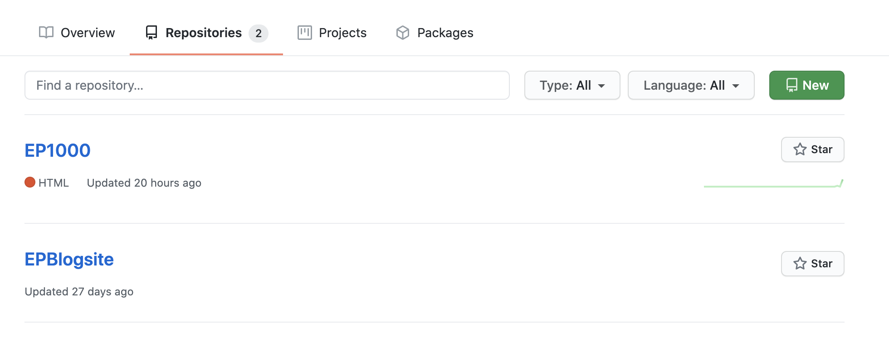
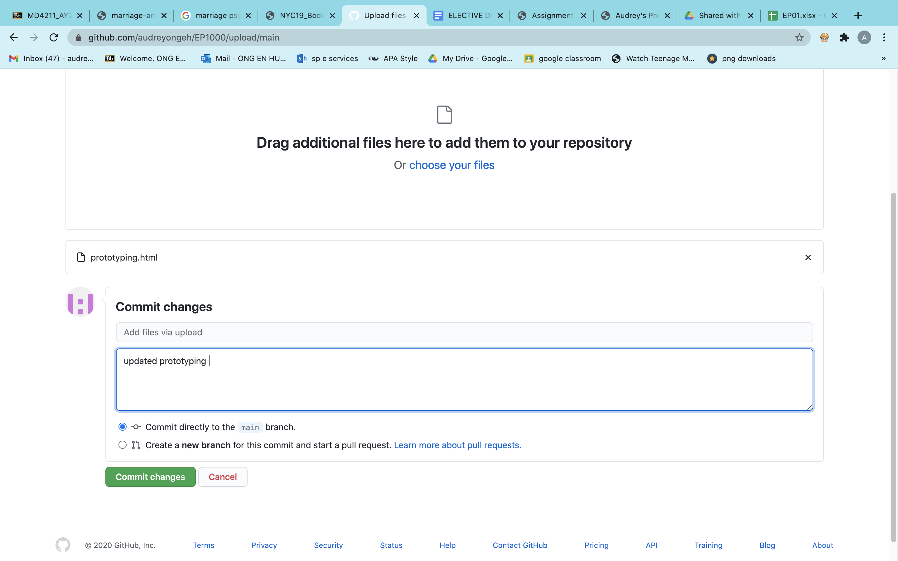
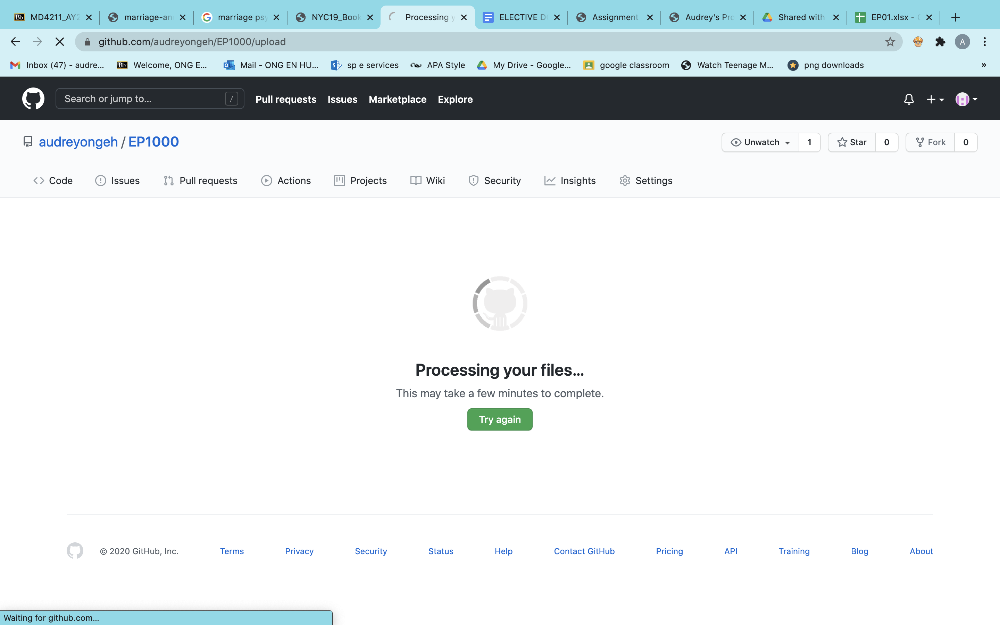
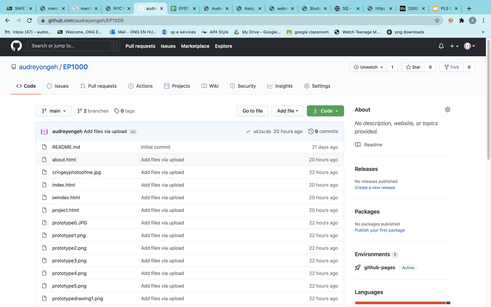

Version Control
Version Control allows you to track your work easily and explore/edit changes with ease.
Github
You can host your website on Github. There are many ways to do this, I'll show you how I ended up doing it.
1. Create a github account and install Github desktop
2. Create a repository, you can see the green 'new' button on the top right. When you create a repository, make sure to add a README doc.

Github is a commit-pull-push workflow, what this means is that after you have made your edits and uploaded your files, you must press "commit" (as seen below). You could say Commit is a form of a save button.

3. After uploading your code you can edit accordingly by uploading and committing them again and again. Make sure to give it a few minutes to update. Here is what it looks like loading.

4. Check to see that all your files are there.

Finally, get your link. It is often your (username)(github.io)(name of repository)(HTML code). Mine is: https://audreyongeh.github.io/EP1000/jwindex.html
Thank you! That's all :)
Last updated: 25th November 2020